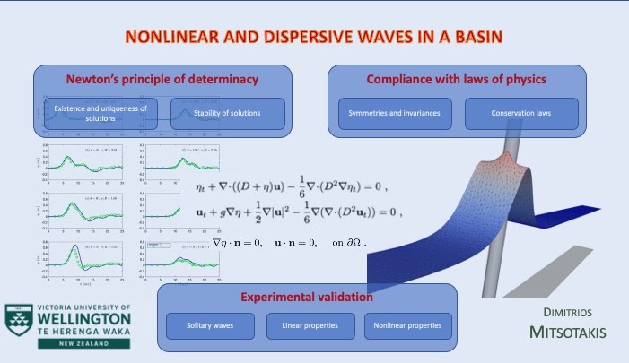

Wave Phenomena
The next waves of interest that are easily seen by everyone, and which are usually used as an example of waves in elementary courses, are water waves. As we shall soon see, they are the worst possible example, because they are in no respect like sound and light; they have all the complications that waves can have.
Richard Feynman
Gravity water waves, such as tsunamis and solitary waves, are nonlinear and dispersive. They are nonlinear because the interactions among them or with boundaries are inelastic, and dispersive because waves of different amplitudes and wavelengths propagate at different speeds. This complexity makes water wave equations more complicated than other nonlinear or linear, non-dispersive waves. However, in certain studies of water waves, non-dispersive wave equations are used to simplify the analysis, just as we use Newton's law of universal gravitation instead of Einstein's general theory of relativity whenever possible. Water wave equations, derived from first principles such as mass and momentum conservation laws, are partial differential equations. The fundamental water wave equations are known as the Euler equations and were derived by Leonard Euler in 1757. These equations can be written in the form
The particular problem is extremely challenging to solve both theoretically and numerically. It is so difficult that no known numerical method has been proven to converge for any of its initial-boundary value problems thus far. The well-posedness theory of Euler's equations is also limited to unbounded domains only. Given their complexity, much of the research on water waves focuses on deriving simplified equations. These simplified equations are based on assumptions that aim to simplify the analysis, such as the long wave assumption. This is because waves of significant interest, such as solitary waves and tsunamis, are typically very long waves with small amplitudes compared to the water depth. Due to these two important characteristics, these waves can be considered weakly nonlinear and weakly dispersive in asymptotic terms. The first derived simplified equation for describing such waves is known as the Korteweg-de Vries (KdV) equation. Joseph Valentin Boussinesq derived the KdV equation in 1877 (along with other equations known as Boussinesq equations), and it was also independently derived by Diederik Korteweg and Gustav de Vries in 1895. The KdV equation is a nonlinear and dispersive equation given by:
where the linear speed of propagation is denoted by
Although the KdV equation is an integrable equation, it is not an accurate physical model for water waves. For instance, the interaction of its solitary waves is elastic, while numerical evidence suggests that this is not true in the Euler equations. Therefore, the KdV equation can be misleading in the physical and dynamic description of water waves. Additionally, the KdV equation becomes very complicated and impractical when used in bounded domains. This is because it requires a different number of boundary conditions on each side of the domain. Furthermore, the KdV equation cannot accurately describe wave reflections. Extensive work on boundary value problems of the KdV equation has been carried out by A. Fokas, who introduced a new transform method to solve linear differential equations in bounded and semi-bounded domains.
For these reasons, a team led by B. Benjamin, FRS, and consisting of B. Barnard, J. Bona, J. Mahony, B. Pritchard, R. Smith and J. Toland, FRS, focused on studying the Euler equations and in deriving simplified model equations such as the BBM (Benjamin-Bona-Mahony) equation:
The BBM equation, also known as the regularized long-wave equation, was derived by H. Peregrine, FRS, for similar reasons as the team led by B. Benjamin. They aimed to study water waves propagating over a flat bottom. The team led by B. Benjamin derived and analyzed equations, and later on, various other authors focused on deriving mathematically and physically acceptable equations, primarily for the case of horizontal bottom topography.
According to V. Arnold, acceptable deterministic equations must adhere to Newton's principle of determinacy, which states that the initial state of a mechanical system (the positions and velocities of its points at a specific moment in time) uniquely determines its entire motion. This concept was further developed in mathematical terms by J. Hadamard, who introduced the notion of well-posedness of partial differential equations. (Note that the Wikipedia link contains a wrong example, so please ignore the details.) Well-posedness refers to the conditions where the initial and boundary conditions are equally important for determining the physical state of the system. The systems derived in the works, particularly authored by J. Bona, contain detailed proofs of well-posedness in bounded or unbounded domains and other forms of theoretical justification.
On the other hand, with practical applications in mind, H. Peregrine was the one who derived the first useful system in 1967 for describing the propagation of long waves of small amplitude over variable topography, known as the Peregrine system. The first equation in the system represents the mass conservation, while the second equation is an approximation of the momentum conservation:
Peregrine's system has proven to be very useful in engineering applications and has contributed to a better understanding of the relevant physics of water waves. However, the supporting theory of well-posedness, particularly in bounded domains, remains incomplete. Additionally, solutions to the Peregrine system do not preserve any reasonable form of the total energy. This issue is generally observed in many Boussinesq-type systems. Furthermore, these systems often violate fundamental laws of physics, such as Galilean invariance and positivity of solutions. This situation leads to what can be described as an epistemological anarchism, where equations derived to describe physical phenomena do not obey the laws of mathematics and physics.
Although Boussinesq systems cannot be considered as first principles, it is crucial for them to inherit as much physics as possible to ensure their physical relevance compared to the Euler equations. One example of significant importance is the problem of dispersive long-wave runup, where the linear dispersion relation can only be physically meaningful at different altitudes if the governing equations are invariant under vertical translations. Otherwise, the fluid velocity would be incorrect. This was demonstrated for the first time in [DKM] through a simple example involving two lakes at different altitudes.
Another notable system extensively used in applications is the extended Boussinesq system proposed by O. Nwogu, which exhibits optimal linear dispersion characteristics.
Although the extended Boussinesq system has been widely used in the study of nonlinear and dispersive waves, it shares the same limitations as the Peregrine system in terms of missing certain pieces of information.
In addition to the two notable and useful systems mentioned earlier, several other systems have been derived. However, all of them lack an appropriate supporting theory to maintain the laws of physics and mathematics. Despite being proper asymptotic approximations to the Euler equations and expected to describe the same phenomena with similar accuracy, these systems are deemed unacceptable and physically irrelevant for describing water waves.
One such system is the KdV-KdV system, which has been proven in [BDM1] and [BDM2] to be unable to accurately describe solitary waves as they appear in the Euler equations of water wave theory. The KdV-KdV system exhibits traveling waves with small periodic orbits, resulting in infinite energy (homoclinic to periodic orbits).
On the other hand, the BBM-BBM system, which is asymptotically equivalent to the KdV-KdV system, possesses all the desirable properties one would expect from model equations describing water waves. This suggests that asymptotic analysis alone cannot justify the validity of physical models.
Focusing our research on developing useful and justified systems, as well as justified numerical methods for water wave problems, we have made significant progress in establishing theoretical and numerical foundations for the analysis of initial-boundary value problems involving nonlinear and dispersive wave equations. This research has enabled us to identify one Boussinesq system, among many others, that incorporates variable bottom topography and has been proven (thus far) to be well-posed according to Hadamard's criteria (adhering to Newton's principle of determinacy) when slip-wall boundary conditions are applied at the domain boundaries. Additionally, this system possesses the crucial physical property of conserving energy, similar to its non-dispersive counterpart. This simplified system can be expressed in the following form:
where
This Boussinesq system, which satisfies well-posedness criteria and energy conservation, was initially derived in the work [KMS], and further detailed investigations were conducted in [IKKM], [AM], [IKM]. These publications, along with our other works [DMS1], [DMS2], [DMS3], [ADM1], [ADM2] represent a valuable contribution to the literature as they provide both theoretical and numerical analysis frameworks for addressing water wave problems in bounded domains. These works specifically consider various boundary conditions such as slip wall, non-slip wall, periodic, wavemaker, and other artificial conditions.
References
- [BDM1]
- J. Bona, V. Dougalis, D. Mitsotakis, Numerical solution of KdV-KdV systems of Boussinesq equations: I. The numerical scheme and generalized solitary waves, Mat. Comp. Simul., 74 (2007), 214–228, DOI:10.1016/j.matcom.2006.10.004 (PDF)
- [BDM2]
- J. Bona, V. Dougalis, D. Mitsotakis, Numerical solution of KdV-KdV systems of Boussinesq equations: II. Generation and evolution of radiating solitary waves, Nonlinearity, 21 (2008), 2825–2848, DOI:10.1088/0951-7715/21/12/006 (PDF)
- [DKM]
- D. Dutykh, T. Katsaounis, D. Mitsotakis, Finite volume schemes for dispersive wave propagation and run-up, Journal of Computational Physics, 230 (2011), 3035–3061, DOI:10.1016/j.jcp.2011.01.003 (PDF)
- [IKKM]
- S. Israwi, H. Kalisch, T. Katsaounis, D. Mitsotakis, A regularized shallow-water waves system with slip-wall boundary conditions in a basin: Theory and numerical analysis, Nonlinearity, 35 (2022), 750–786, DOI:10.1088/1361-6544/ac3c29 (PDF)
- [AM]
- D. Antonopoulos, D. Mitsotakis, Bona-Smith-type systems in bounded domains with slip-wall boundary conditions: Theoretical justification and a conservative numerical scheme, Journal of Scientific Computing, 102 (2025), DOI:10.1007/s10915-024-02742-8 (PDF)
- [IKM]
- S. Israwi, Y. Khalifeh, D. Mitsotakis, Equations for small amplitude shallow water waves over small bathymetric variations, Proc. R. Soc. A, 479 (2023), 20230191, DOI:10.1098/rspa.2023.0191 (PDF with corrections)
- [KMS]
- T. Katsaounis, D. Mitsotakis, G. Sadaka, Boussinesq-Peregrine water wave models and their numerical approximation, J. Comp. Phys., 417 (2020), 109579, DOI:10.1016/j.jcp.2020.109579 (PDF)
- [DMS1]
- V. Dougalis, D. Mitsotakis, J.-C. Saut, On some Boussinesq systems in two space dimensions: Theory and numerical analysis, Math. Model. Num. Anal., 41 (2007), 825–854, DOI:10.1051/m2an:2007043 (PDF)
- [DMS2]
- V. Dougalis, D. Mitsotakis, J.-C. Saut, On initial-boundary value problems for a Boussinesq system of BBM-BBM type in a plane domain, Discrete Contin. Dyn. Syst., 23 (2009), 1191–1204, DOI:10.3934/dcds.2009.23.1191 (PDF)
- [DMS3]
- V. Dougalis, D. Mitsotakis, J.-C. Saut, Initial-boundary-value problems for Boussinesq systems of Bona-Smith type on a plain domain: theory and numerical analysis, J. Sci. Comput., 44 (2010), 109–135, DOI:10.1007/s10915-010-9368-z (PDF)
- [ADM1]
- D. Antonopoulos, V. Dougalis, D. Mitsotakis, Initial-boundary value problems for the Bona-Smith family of Boussinesq systems, Adv. Differential Equations, 14 (2009), 27–53, 1171.35457 (PDF)
- [ADM2]
- D. Antonopoulos, V. Dougalis, D. Mitsotakis, Numerical solution of Boussinesq systems of the Bona-Smith family, Appl. Numer. Math., 30 (2010), 314–336, DOI:10.1016/j.apnum.2009.03.002 (PDF)
Gallery of Waves
